Inverted Pendulum: State-Space Methods for Controller Design
Key MATLAB commands used in this tutorial are: ss , eig , lsim , lqr , ctrb , plotyy , obsv , place
Contents
From the main problem, the dynamic equations of the inverted pendulum system in state-space form are the following:
(1)![$$
\left[{\begin{array}{c}
\dot{x} \\ \ddot{x} \\ \dot{\phi} \\ \ddot{\phi}
\end{array}}\right] =
\left[{\begin{array}{cccc}
0 & 1 & 0 & 0 \\
0 & -0.1818 & 2.6727 & 0 \\
0 & 0 & 0 & 1 \\
0 & -0.4545 & 31.1818 & 0
\end{array}}\right]
\left[{\begin{array}{c}
x \\ \dot{x} \\ \phi \\ \dot{\phi}
\end{array}}\right] +
\left[{\begin{array}{c}
0 \\ 1.8182 \\ 0 \\ 4.5455
\end{array}}\right]u
$$](Content/InvertedPendulum/Control/StateSpace/html/InvertedPendulum_ControlStateSpace_eq35070.png)
(2)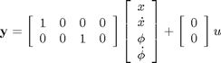
To see how this problem was originally set up and the system equations were derived, consult the Inverted Pendulum: System Modeling page. For this problem the outputs are the cart's displacement ( in meters) and the pendulum angle ( in radians) where represents the deviation of the pedulum's position from equilibrium, that is, .
The design criteria for this system for a 0.2-m step in desired cart position are as follows:
- Settling time for and of less than 5 seconds
- Rise time for of less than 0.5 seconds
- Pendulum angle never more than 20 degrees (0.35 radians) from the vertical
- Steady-state error of less than 2% for and
As you may have noticed if you went through some of the other inverted pendulum examples, the design criteria for this example are different. In the other examples we were attemping to keep the pendulum vertical in response to an impulsive disturbance force applied to the cart. We did not attempt to control the cart's position. In this example, we are attempting to keep the pendulum vertical while controlling the cart's position to move 0.2 meters to the right. A state-space design approach is well suited to the control of multiple outputs as we have here.
This problem can be solved using full-state feedback. The schematic of this type of control system is shown below where is a matrix of control gains. Note that here we feedback all of the system's states, rather than using the system's outputs for feedback.

Open-loop poles
In this problem, represents the step command of the cart's position. The 4 states represent the position and velocity of the cart and the angle and angular velocity of the pendulum. The output 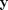 contains both the position of the cart and the angle of the pendulum. We want to design a controller so that when a step reference is given to the system, the pendulum should be displaced, but eventually return to zero (i.e. vertical) and the cart should move to its new commanded position. To view the system's open-loop response please refer to the Inverted Pendulum: System Analysis page.
The first step in designing a full-state feedback controller is to determine the open-loop poles of the system. Enter the following lines of code into an m-file. After execution in the MATLAB command window, the output will list the open-loop poles (eigenvalues of ) as shown below.
M = 0.5; m = 0.2; b = 0.1; I = 0.006; g = 9.8; l = 0.3; p = I*(M+m)+M*m*l^2; %denominator for the A and B matrices A = [0 1 0 0; 0 -(I+m*l^2)*b/p (m^2*g*l^2)/p 0; 0 0 0 1; 0 -(m*l*b)/p m*g*l*(M+m)/p 0]; B = [ 0; (I+m*l^2)/p; 0; m*l/p]; C = [1 0 0 0; 0 0 1 0]; D = [0; 0]; states = {'x' 'x_dot' 'phi' 'phi_dot'}; inputs = {'u'}; outputs = {'x'; 'phi'}; sys_ss = ss(A,B,C,D,'statename',states,'inputname',inputs,'outputname',outputs); poles = eig(A)
poles =
0
-5.6041
-0.1428
5.5651
As you can see, there is one right-half plane pole at 5.5651. This should confirm your intuition that the system is unstable in open loop.
Linear Quadratic Regulation (LQR)
The next step in the design process is to find the vector of state-feedback control gains assuming that we have access (i.e. can measure) all four of the state variables. This can be accomplished in a number of ways. If you know the desired closed-loop pole locations, you can use the MATLAB commands place or acker. Another option is to use the lqr command which returns the optimal controller gain assuming a linear plant, quadratic cost function, and reference equal to zero (consult your textbook for more details).
Before we design our controller, we will first verify that the system is controllable. Satisfaction of this property means that we can drive the state of the system anywhere we like in finite time (under the physical constraints of the system). For the system to be completely state controllable, the controllability matrix must have rank where the rank of a matrix is the number of independent rows (or columns). The controllability matrix of the system takes the form shown below. The number corresponds to the number of state variables of the system. Adding additional terms to the controllability matrix with higher powers of the matrix will not increase the rank of the controllability matrix since these additional terms will just be linear combinations of the earlier terms.
(3)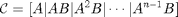
Since our controllability matrix is 4x4, the rank of the matrix must be 4. We will use the MATLAB command ctrb to generate the controllability matrix and the MATLAB command rank to test the rank of the matrix. Adding the following additional commands to your m-file and running in the MATLAB command window will produce the following output.
co = ctrb(sys_ss); controllability = rank(co)
controllability =
4
Therefore, we have verified that our system is controllable and thus we should be able to design a controller that achieves the given requirements. Specifically, we will use the linear quadratic regulation method for determining our state-feedback control gain matrix . The MATLAB function lqr allows you to choose two parameters, and , which will balance the relative importance of the control effort () and error (deviation from 0), respectively, in the cost function that you are trying to optimize. The simplest case is to assume , and . The cost function corresponding to this and places equal importance on the control and the state variables which are outputs (the pendulum's angle and the cart's position). Essentially, the lqr method allows for the control of both outputs. In this case, it is pretty easy to do. The controller can be tuned by changing the nonzero elements in the matrix to achieve a desirable response. To observe the structure of , enter the following into the MATLAB command window to see the output given below.
Q = C'*C
Q =
1 0 0 0
0 0 0 0
0 0 1 0
0 0 0 0
The element in the (1,1) position of represents the weight on the cart's position and the element in the (3,3) position represents the weight on the pendulum's angle. The input weighting will remain at 1. Ultimately what matters is the relative value of and , not their absolute values. Now that we know how to interpret the matrix, we can experiment to find the matrix that will give us a "good" controller. We will go ahead and find the matrix and plot the response all in one step so that changes can be made in the control and seen automatically in the response. Add the following commands to the end of your m-file and run in the MATLAB command window to get the following value for and the response plot shown below.
Q = C'*C;
R = 1;
K = lqr(A,B,Q,R)
Ac = [(A-B*K)];
Bc = [B];
Cc = [C];
Dc = [D];
states = {'x' 'x_dot' 'phi' 'phi_dot'};
inputs = {'r'};
outputs = {'x'; 'phi'};
sys_cl = ss(Ac,Bc,Cc,Dc,'statename',states,'inputname',inputs,'outputname',outputs);
t = 0:0.01:5;
r =0.2*ones(size(t));
[y,t,x]=lsim(sys_cl,r,t);
[AX,H1,H2] = plotyy(t,y(:,1),t,y(:,2),'plot');
set(get(AX(1),'Ylabel'),'String','cart position (m)')
set(get(AX(2),'Ylabel'),'String','pendulum angle (radians)')
title('Step Response with LQR Control')
K = -1.0000 -1.6567 18.6854 3.4594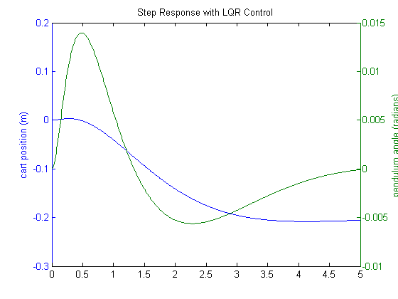
The curve in green represents the pendulum's angle in radians, and the curve in blue represents the cart's position in meters. As you can see, this plot is not satisfactory. The pendulum and cart's overshoot appear fine, but their settling times need improvement and the cart's rise time needs to be reduced. As I'm sure you have noticed, the cart's final position is also not near the desired location but has in fact moved in the opposite direction. This error will be dealt with in the next section and right now we will focus on the settling and rise times. Go back to your m-file and change the matrix to see if you can get a better response. You will find that increasing the (1,1) and (3,3) elements makes the settling and rise times go down, and lowers the angle the pendulum moves. In other words, you are putting more weight on the errors at the cost of increased control effort . Modifying your m-file so that the (1,1) element of is 5000 and the (3,3) element is 100, will produce the following value of and the step response shown below.
Q = C'*C;
Q(1,1) = 5000;
Q(3,3) = 100
R = 1;
K = lqr(A,B,Q,R)
Ac = [(A-B*K)];
Bc = [B];
Cc = [C];
Dc = [D];
states = {'x' 'x_dot' 'phi' 'phi_dot'};
inputs = {'r'};
outputs = {'x'; 'phi'};
sys_cl = ss(Ac,Bc,Cc,Dc,'statename',states,'inputname',inputs,'outputname',outputs);
t = 0:0.01:5;
r =0.2*ones(size(t));
[y,t,x]=lsim(sys_cl,r,t);
[AX,H1,H2] = plotyy(t,y(:,1),t,y(:,2),'plot');
set(get(AX(1),'Ylabel'),'String','cart position (m)')
set(get(AX(2),'Ylabel'),'String','pendulum angle (radians)')
title('Step Response with LQR Control')
Q =
5000 0 0 0
0 0 0 0
0 0 100 0
0 0 0 0
K =
-70.7107 -37.8345 105.5298 20.9238
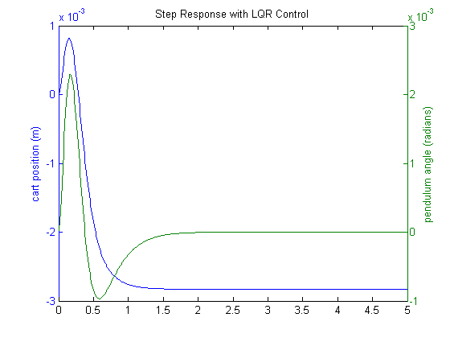 You may have noted that if you increased the values of the elements of even higher, you could improve the response even more. The reason this weighting was chosen was because it just satisfies the transient design requirements. Increasing the magnitude of more would make the tracking error smaller, but would require greater control force . More control effort generally corresponds to greater cost (more energy, larger actuator, etc.).
Adding precompensation
The controller we have designed so far meets our transient requirements, but now we must address the steady-state error. In contrast to the other design methods, where we feedback the output and compare it to the reference input to compute an error, with a full-state feedback controller we are feeding back all of the states. We need to compute what the steady-state value of the states should be, multiply that by the chosen gain , and use a new value as our "reference" for computing the input. This can be done by adding a constant gain after the reference. The schematic below shows this relationship:

We can find this factor by employing the used-defined function rscale.m as shown below. The matrix is modified to reflect the fact that the reference is a command only on cart position.
Cn = [1 0 0 0]; sys_ss = ss(A,B,Cn,0); Nbar = rscale(sys_ss,K)
Nbar = -70.7107
Note that the function rscale.m is not a standard function in MATLAB. You will have to download it here and place it in your current directory. More information can be found here, Extras: rscale.m. Now you can plot the step response by adding the above and following lines of code to your m-file and re-running at the command line.
sys_cl = ss(Ac,Bc*Nbar,Cc,Dc,'statename',states,'inputname',inputs,'outputname',outputs); t = 0:0.01:5; r =0.2*ones(size(t)); [y,t,x]=lsim(sys_cl,r,t); [AX,H1,H2] = plotyy(t,y(:,1),t,y(:,2),'plot'); set(get(AX(1),'Ylabel'),'String','cart position (m)') set(get(AX(2),'Ylabel'),'String','pendulum angle (radians)') title('Step Response with Precompensation and LQR Control')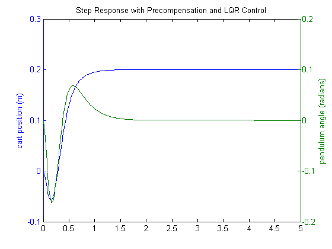
Now, the steady-state error is within our limits, the rise and settle times are met, and the pendulum's overshoot is within range of the design criteria.
Note that the precompensator employed above is calculated based on the model of the plant and further that the precompensator is located outside of the feedback loop. Therefore, if there are errors in the model (or unknown disturbances) the precompensator will not correct for them and there will be steady-state error. You may recall that the addition of integral control may also be used to eliminate steady-state error, even in the presence of model uncertainty and step disturbances. For an example of how to implement integral control in the state space setting, see the Motor Position: State-Space Methods example. The tradeoff with using integral control is that the error must first develop before it can be corrected for, therefore, the system may be slow to respond. The precompensator on the other hand is able to anticipitate the steady-state offset using knowledge of the plant model. A useful technique is to combine the precompensator with integral control to leverage the advantages of each approach.
Observer-based control
The response achieved above is good, but was based on the assumption of full-state feedback, which is not necessarily valid. To address the situation where not all state variables are measured, a state estimator must be designed. A schematic of state-feedback control with a full-state estimator is shown below, without the precompensator .

Before we design our estimator, we will first verify that our system is observable. The property of observability determines whether or not based on the measured outputs of the system we can estimate the state of the system. Similar to the process for verifying controllability, a system is observable if its observability matrix is full rank. The observability matrix is defined as follows.
(4)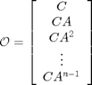
We can employ the MATLAB command obsv to contruct the observability matrix and the rank command to check its rank as shown below.
ob = obsv(sys_ss); observability = rank(ob)
observability =
4
Since the observability matrix is 8x4 and has rank 4, it is full rank and our system is observable. The observability matrix in this case is not square since our system has two outputs. Note that if we could only measure the pendulum angle output, we would not be able to estimate the full state of the system. This can be verified by the fact that obsv(A,C(2,:)) produces an observability matrix that is not full rank.
Since we know that we can estimate our system state, we will now describe the process for designing a state estimator. Based on the above diagram, the dynamics of the state estimate are described by the following equation.
(5)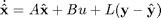
The spirit of this equation is similar to that of closed-loop control in that last term is a correction based on feedback. Specifically, the last term corrects the state estimate based on the difference between the actual output and the estimated output . Now let's look at the dynamics of the error in the state estimate.
(6)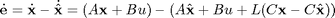
Therefore, the state estimate error dynamics are described by
(7)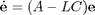
and the error will approach zero ( will approach ) if the matrix is stable (has negative eigenvalues). As is with the case for control, the speed of convergence depends on the poles of the estimator (eigenvalues of ). Since we plan to use the state estimate as the input to our controller, we would like the state estimate to converge faster than is desired from our overall closed-loop system. That is, we would like the observer poles to be faster than the controller poles. A common guideline is to make the estimator poles 4-10 times faster than the slowest controller pole. Making the estimator poles too fast can be problematic if the measurement is corrupted by noise or there are errors in the sensor measurement in general.
Based on this logic, we must first find the controller poles. To do this, copy the following code to the end of your m-file. If you employed the updated matrix, you should see the following poles in the MATLAB command window.
poles = eig(Ac)
poles = -8.4910 + 7.9283i -8.4910 - 7.9283i -4.7592 + 0.8309i -4.7592 - 0.8309i
The slowest poles have real part equal to -4.7592, therefore, we will place our estimator poles at -40. Since the closed-loop estimator dynamics are determined by a matrix () that has a similar form to the matrix that determines the dynamics of the state-feedback system (), we can use the same commands for finding the estimator gain as we can for finding the state-feedback gain . Specifically, since taking the transpose of leaves the eigenvalues unchanged and produces a result that exactly matches the form of , we can use the acker or place commands. Recalling that the place command cannot place poles of multiplicity greater than one, we will place the observer poles as follows. Add the following commands to your m-file to calculate the matrix and generate the output shown below.
P = [-40 -41 -42 -43]; L = place(A',C',P)'
L =
1.0e+03 *
0.0826 -0.0010
1.6992 -0.0402
-0.0014 0.0832
-0.0762 1.7604
We are using both outputs (the angle of the pendulum and the position of the cart) to design the observer.
Now we will combine our state-feedback controller from before with our state estimator to get the full compensator. The resulting closed-loop system is described by the following matrix equations.
(8)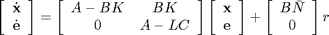
(9)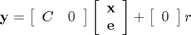
The closed-loop system described above can be implemented in MATLAB by adding the following commands to the end of your m-file. After running the m-file the step response shown will be generated.
Ace = [(A-B*K) (B*K);
zeros(size(A)) (A-L*C)];
Bce = [B*Nbar;
zeros(size(B))];
Cce = [Cc zeros(size(Cc))];
Dce = [0;0];
states = {'x' 'x_dot' 'phi' 'phi_dot' 'e1' 'e2' 'e3' 'e4'};
inputs = {'r'};
outputs = {'x'; 'phi'};
sys_est_cl = ss(Ace,Bce,Cce,Dce,'statename',states,'inputname',inputs,'outputname',outputs);
t = 0:0.01:5;
r = 0.2*ones(size(t));
[y,t,x]=lsim(sys_est_cl,r,t);
[AX,H1,H2] = plotyy(t,y(:,1),t,y(:,2),'plot');
set(get(AX(1),'Ylabel'),'String','cart position (m)')
set(get(AX(2),'Ylabel'),'String','pendulum angle (radians)')
title('Step Response with Observer-Based State-Feedback Control')
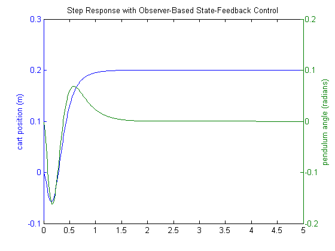 This response is almost identical to the response achieved when it was assumed that we had full access to the state variables. This is because the observer poles are fast, and because the model we assumed for the observer is identical to the model of the actual plant (including the same initial conditions). Therefore, all of the design requirements have been met with the minimal control effort expended. No further iteration is needed.
This example demonstrates that it is much easier to control multi-input, multi-output systems with the state-space method than with the other methods we have presented.